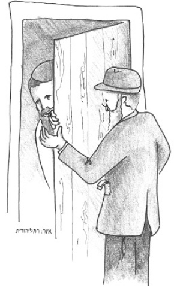

A Din Torah with Hashem
Presented to mark 21 Adar, the day that Rabbi Elimelech of Lizhensk, the student of the Maggid of Mezritch, passed away.

But the joy was mixed with sadness. One could see on the faces of many of the guests that the simcha was not complete. Why? A wedding was not a minor event; it was seldom that weddings took place in the Estreich district lately. The reason was a harsh decree that the Kaiser had enacted.
The Kaiser decreed that every Jewish girl who wanted to marry could not do so before bringing him 400 gold coins, an enormous sum.
Most of the Jews could not afford it and therefore, they did not marry off their daughters. Only very wealthy people could afford to give the Kaiser that amount of money and still have money left for the wedding expenses.
The decree was terrible. Parents were devastated to see their children getting older without being able to marry.
In a village near Lizhensk, lived a simple, sincere, G-d fearing Jew. He was poor and he also had a daughter of marriageable age. He did not have money for wedding expenses and certainly not 400 gold coins for the Kaiser.
One day, a shadchan knocked at the door.
“Moshe, I have a wonderful idea for you,” said the man. “I know that your daughter is modest and of good character and I came to suggest a good chassan for her.”
“Go ahead,” said Moshe, who was curious to hear what he had to say.
“He is a wonderful young man, G-d fearing and of good character. As far as the money, don’t worry. They are so interested in the shidduch that they are not asking for money.” The shadchan went on to give more details as Moshe asked him for more information.
By the end of the conversation, Moshe’s eyes sparkled. He had not dreamed of such a wonderful offer in his rosiest dreams. But his joy was not long lasting. Oy, the decree! How had he forgotten? 400 gold coins for the Kaiser was an amount he could not possibly obtain.
His heart broke. Would he have to lose out on the opportunity to marry off his daughter because of the Kaiser’s wickedness? No! That was impossible! He decided to go immediately to his Rebbe, R’ Elimelech of Lizhensk, and pour out his heart to him.
He rushed over there and as he crossed the threshold into the Rebbe’s room he cried out, “Rebbe, I have a din Torah with Hashem!”
As soon as he blurted this out, he paused as he realized what he said. He was overcome with fright. How had he dared to speak so impudently toward Hashem? He greatly regretted what he said and thought the Rebbe would reprimand him and send him away. He wanted to run away, but then he heard a soft, fatherly voice. R’ Elimelech said, “Stay here, my son. You said you have a din Torah with Hashem. Fine. But it is not permissible to judge a din Torah alone; there must be at least three judges. So go and tell my two judges that I am calling them to my room to judge with me.”
Moshe was very frightened and his entire body shook. He had not meant what he said literally! To go to court with Hashem? How frightening! But he had no choice; he had to listen to the Rebbe.
He went and called the two judges and they came to the Rebbe’s room.
“State your claim and we will listen,” said the Rebbe.
At first, Moshe’s voice trembled but it slowly became stronger and he spoke from his heart. “Hashem gave us the holy Torah. In the Torah there are 613 mitzvos and one of them is the mitzva to marry and establish a Jewish home. Now the Kaiser of our country decreed that one cannot marry without bringing him 400 gold coins. Who can afford this enormous sum aside from very wealthy men? Many girls are sitting and waiting and cannot marry because of this decree. I also have an older daughter and now Hashem has sent me a good shidduch for her but the decree prevents me from making a wedding. How can it be that Hashem asks us to do a mitzva but then sends a decree that prevents us from performing it?”
Moshe finished speaking and breathed deeply. He was very emotional and his face was red from his exertion.
Said R’ Elimelech, “We know what Hashem has to say. Now we need to declare the din. Although according to halacha, we generally remove the two opposing sides from the room, the judges judge alone and then bring the two sides back in to hear the p’sak din, we cannot send Hashem out of the room, G-d forbid, for the entire world is full of His glory, and we cannot exist for a moment without Him. Since we cannot send out one of the parties, we will have you remain in the room too.”
The Rebbe sat in great concentration with his eyes closed, for a quarter of an hour. Then he asked the judges to bring him a Gemara Gittin. He opened it and began to discuss the halacha of a Jew who is half a slave and half a free man. In such a case, he cannot marry a maidservant because he is half free. Nor can he marry a free girl because he is half a slave. What is done? His master is forced to free him and then he can marry the free girl.
As he said the words “his master is forced,” he gazed heavenward and said to Moshe, “Go home in peace because the decree was canceled.”
Moshe left the Rebbe’s room in great joy and hurried home. On the way he met members of his household who excitedly came to tell him that the decree was canceled and the wedding could take place.
Beis Moshiach (staff). "A Din Torah with Hashem." Beis Moshiach, no. 920 (March 19, 2014).